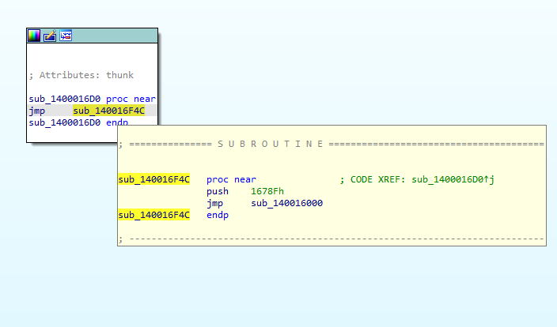

BinaryShield: a bin2bin x86-64 code virtualizer
The purpose of this post is primarily to explain the technical workings of my tool, BinaryShield, but it can also be treated as an introduction to VM based protections.
This is NOT About Hypervisor Technology!
To clear up any confusion, I want to first clarify that we are not talking about hypervisors such as VMware. I cannot stress that enough. Although they share similar ideas and terminology, I would argue that the kind of VM, or virtual machine, we will be discussing in the post is completely different to hypervisor technology. The kind of VMs we will be discussing today are especially useful in protecting software from reverse engineering efforts, or at least that is the area of application we will be investigating.
How Does a Virtual Machine Work?
The following section is a brief explanation of what virtual machines are, and how they function. It contains little information regarding BinaryShield. Therefore, if you’re already familiar with how virtual machines work, you are advised to skip ahead.
A virtual machine (VM) is a software-based simulation of a physical computer. Although they possess a wide range of applications, such as code portability and platform independence, this article will focus on how they’re applied in protecting code from reverse engineering.
The technical explanation of their inner workings is virtually (no pun intended) no different to how a physical system functions. Virtual machines typically contain a Central Processing Unit (CPU), some memory, a stack, registers, and whatever else the developer decides to add. The only real difference is how they go about executing instructions.
Whereas a physical computer executes machine code directly, a virtual machine, running “under” another system, relies on the underlying physical hardware to perform its tasks. This means that each of its instructions must be translated into a sequence of operations to be executed by the host CPU. These sequences, responsible for interpreting and executing the virtual machine’s instructions, are commonly referred to as “handlers.”
Depending on the virtual machine, it may have few handlers, or lots. As of writing this, BinaryShield has over 60+. Point being that these handlers are where the virtual machine carries out its execution. If this isn’t clear then perhaps taking a look at these examples may help.
Obfuscation Application
Now that we have a basic understanding of what a VM is, you might be wondering how it’s applied to prevent reverse engineering. Imagine translating the x86 instructions, from a function, into a bytecode for our virtual machine to execute. At this point, the reverse engineer’s task shifts from simply disassembling the executable with common tools like x64dbg to the far more complex challenge of reverse engineering the VM itself. To make any progress, they would need to develop their own disassembler for our VM. This alone significantly raises the difficulty of their task.
Furthermore, depending on the VM’s instruction set, a single x86 instruction may very well translate to multiple VM handlers. Therefore, the reverser must also identify what x86 instruction the sequence of handlers are emulating. But the challenge doesn’t end there. Since handlers consist of native instructions, we can further obfuscate them using techniques like dead code insertion, opaque predicates, and other anti-reverse engineering tricks. These obfuscations add additional layers of complexity, making it even harder for the reverse engineer to identify and understand the true behavior of the handlers, let alone reconstruct the original code.
As we’ll explore in later sections, translating x86-64 instructions into a custom instruction set is the core of what BinaryShield does. In fact, this is the fundamental approach of any VM-based protection, whether it’s Denuvo, Themida, or VMProtect. These systems all translate assembly instructions into a proprietary bytecode, which is then executed within a secure virtual machine, significantly complicating reverse engineering efforts.
NOTE: Many of these protectors offer additional features, such as HWID (hardware identification) locking, which restricts program usage to a specific system. However, at their core, they are essentially virtual machines designed to exponentially increase the time required to reverse engineer the program.
BinaryShield
BinaryShield is a open-source, bin2bin, x86-64 code virtualiser. As of writing this, it currently has a limited set of supported instructions it can protect, but this is excepted to change as I develop it further. Likewise, it currently offers no real advantage over any of the well established VM-based protectors, such as VMProtect or Themida, other than it is open source and easy to customise.
Internals
The BinaryShield virtual machine utilizes a stack-based RISC instruction set. Notably, its internal architecture closely resembles that of VMProtect’s virtual machine, a similarity that will be explored in more detail shortly.
Architecture
Registers
As mentioned earlier, the BinaryShield virtual machine is stack-based, which means that most instructions access their operands from the virtual stack rather than from registers. However, this does not mean that BinaryShield lacks virtual registers. In fact, the current iteration includes two general-purpose 64-bit registers: R0 and R1.
R0 - is a general-purpose register, meaning it can be used for various reasons by the virtual machine.
R1 - on the other hand is preserved. It’s sole purpose is to store the module base of the program.
Furthermore, we have the generic registers that one would expect to be found in any stack-based architecture: VSP and VIP.
VSP (Virtual Stack Pointer) - is exactly as the name suggests, it is a register that points to the top of the virtual stack.
VIP (Virtual Instruction Pointer) - if it wasn’t obvious from the name again, this is a register that points to the virtual machine’s byte code.
Stack
There isn’t much to say about the virtual stack. It operates as one would expect (i.e. is capable of pushing and popping values). The only notable comment worth making is that it effectively utilises the native stack (see the following section).
Native Stack Usage
Every VM needs to store its context somewhere. Although there are a few ways to go about this, each with their own pros and cons, BinaryShield opts to abuse the native stack to not only carry out its operations but to also store its context.
Before continuing, I will dedicate a brief talk as to why this approach was taken as opposed to other alternatives.
Native Stack Approach
By abusing the native stack, BinaryShield is now capable of executing multi-threaded programs without the constraints of spin-locks, or absurd memory management. This is because each thread that executes the target function has its own memory to use, all automatically provided for us by the OS. The only con to this approach is that whenever the VM pushes something onto the stack, or makes a certain adjustment to the VSP, a “collision” check must be done to ensure we are not about to overwrite our context. If a collision is guaranteed to occur, then BinaryShield will simply move its context further up in the stack (or down depending on how you wish to look at it).
Although it may sound complex, these collisions are unlikely to begin with and the checks are simple to carry out. Therefore, I believe this is the most optimal approach to the problem.
Reserved Memory Approach
Some protection schemes, namely Themida, decide to allocate memory for the virtual machine’s context and other mechanisms. Unlike our approach, this means no collision checks are required. However, multi-threaded applications are likely to suffer as spin-locks will be required to prevent two or more threads from overwriting the context space at the same time. There is obviously the approach of dynamically allocating memory each time the VM is entered, but this is just ugly and could cause further problems with memory usage depending on the application.
NOTE: If you’re clever, you may realise there exist other faults with dynamically allocating memory (hint: exiting and re-entering the vm) but I won’t bore you with the details.
Native Register Usage
Similar to abusing the native stack, BinaryShield also takes advantage of the native registers available to it.
R15 - VSP (Virtual Stack Pointer),
R13 - VIP (Virtual Instruction Pointer),
R14 - Stores the Module Base Address,
The primary reason these registers were selected over the likely choice of RAX, RBX, etc, is because certain x86-64 instructions will use the aforementioned registers (i.e. mul), introducing extra complications.
Native x86-64 Context
Obviously, as execution continues, BinaryShield needs to be updating the values of our original x86 registers. In order to do this, and make use of said registers at the same time for its own purposes, BinaryShield will push majority of the x86-64 context onto the stack during the ENTER handler. Later on, POPR64 handlers will move these native register values into the VM’s context, where they will be read and written from accordingly.
Towards the end of the VM’s execution, BinaryShield will perform the opposite of what was described above. Firstly, it will push all of the native register values back onto the stack. Next, it will execute a EXIT handler, popping all of the values back into their respected registers before exiting the VM. If the description of the ENTER and EXIT handlers is confused, see the Handlers section for clarity.
Function Redirection
Upon virtualising a function, BinaryShield will replace all of the function’s original bytes with 0xCC. Without overwriting these bytes, executing said function inside of the VM would be pointless as majority of the source instructions would remain visible to anyone with a disassembler.
Next, BinaryShield will create a VM trampoline jump and replace the first instructions of the target function with a JMP to the trampoline. This trampoline will push the relative virtual address (RVA) of the bytecode associated with the target function, before directing execution to a ENTER handler.
All this is saying is that feeding the VM this specific bytecode would reproduce the original functions behaviour, effectively executing it. The following image illustrates what a function looks like after it has been redirected to the virtual machine.

Handlers
Currently, BinaryShield contains 60+ handlers that it utilises to carry out its duties. For obvious reasons, I will restrain from naming and describing all of them. However, it would be beneficial to discuss a few of interest.
PUSHR64
PUSHR64 pushes a 64-bit register onto the stack.
; get the index of the virtual register
mov rax, qword ptr [r13]
and rax, 0xFF
inc r13 ; update VIP
mov rax, qword ptr [rsp+rax*0x08] ; read the value of the register to be pushed
sub r15, 0x08 ; create 64-bits of space to place the register on the stack
mov qword ptr [r15], rax ; write target register to the stack
NOTE: You may notice that multiple handlers perform their operations in a “strange” manner. For instance, here we are loading an entire QWORD from [r13], and using a bitmask to get only a single byte. The reason this was done is because these instructions are much easier to mutate than the complex:
mov rax, byte ptr [r13]
Obviously, this isn’t required, but will likely make implementing code mutation easier.
ENTER
The ENTER handler is what every VM trampoline redirects execution flow to. It is responsible for pushing the x86-64 context onto the stack, and setting up the native register usage.
; push native context onto the stack
push r15
push r14
push r13
push r12
push r11
push r10
push r9
push r8
push rbp
push rdi
push rsi
push rdx
push rcx
push rbx
push rax
pushfq
mov r15, rsp ; save the native stack pointer in r15
sub rsp, 0x100 ; allocate 0x100 bytes for the virtual context & stack
; get the current module base
mov r14, qword ptr gs:[0x60]
mov r14, qword ptr [r14+0x10]
mov qword ptr [rsp+0x88], r14 ; store the module base in virtual register R1
mov r13d, dword ptr [r15+0x80] ; load bytecode rva into r13d
; goto next handler
add r13, r14
mov eax, dword ptr [r13]
add r13, 0x04
add rax, r14
jmp rax
EXIT
EXIT is the opposite of ENTER. It’s job is to pop the x86-64 context off the stack and back into the native registers before exiting the VM.
; restore the native context and exit VM
mov rsp, r15
popfq
pop rax
pop rbx
pop rcx
pop rdx
pop rsi
pop rdi
pop rbp
pop r8
pop r9
pop r10
pop r11
pop r12
pop r13
pop r14
pop r15
ret
JNE
JNE, or Jump If Not Equal, will check if the zero flag (ZF) is equal to 0. If so, it will update r13, the VIP.
mov eax, dword ptr [r13] ; load rva of destination instruction's bytecode
add r13, 0x04
add rax, r14
; pop RFLAGS off the virtual stack
push qword ptr [r15]
popfq
lea r15, qword ptr [r15+0x08]
cmovne r13, rax ; if ZF=0, update VIP, else move to the next instruction
; goto next handler
mov eax, dword ptr [r13]
add r13, 0x04
add rax, r14
jmp rax
ADD64
ADD64 adds the top most 64-bit elements on the virtual stack. It, similar to other arithmietc operations, will push the results and rflags onto the stack.
mov rax, qword ptr [r15] ; move into rax the first operand
add qword ptr [r15+0x08] ; add the first operand to the second operand
; push RFLAGS onto the virtual stack
pushfq
pop qword ptr [r15]
; goto next handler
mov eax, dword ptr [r13]
add r13, 0x04
add rax, r14
jmp rax
Final Words
Even in its early development phase, BinaryShield has demonstrated the ability to protect various functions from reverse engineering attempts. There’s still much more to come, including handler mutation, bytecode encryption, and support for multiple VM handler instances. I welcome any feedback, suggestions, or contributions to the project. If you’re interested in testing your skills, you can download a crackme protected by BinaryShield here.